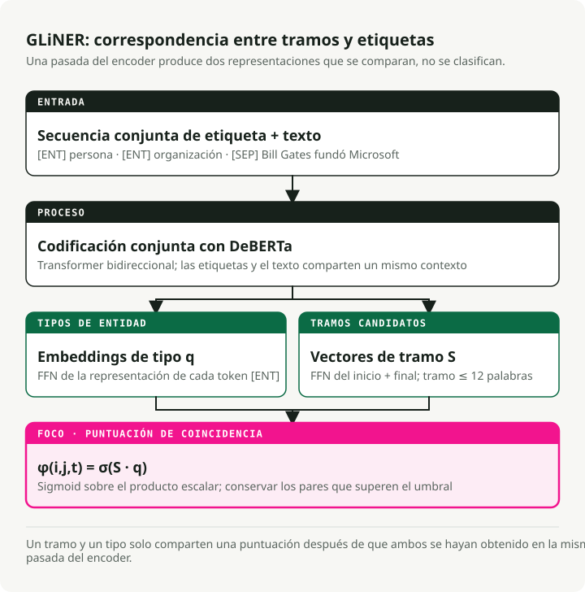
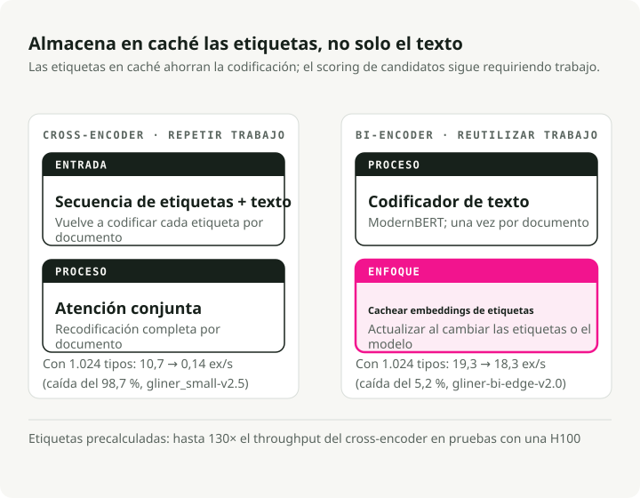
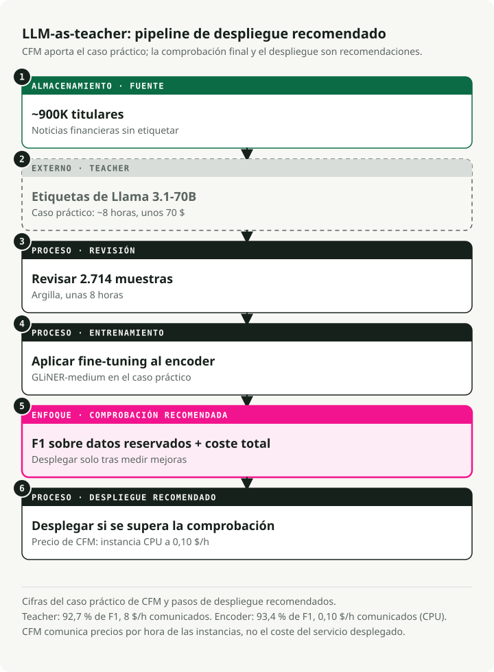
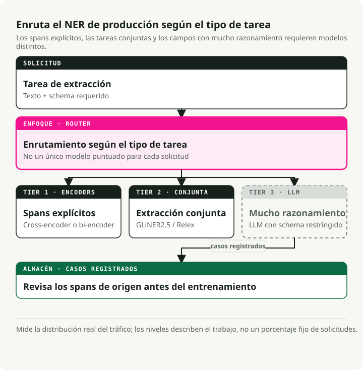

Traducción automática
Este artículo se tradujo automáticamente a partir de la versión original en inglés.
La guía definitiva sobre NER en 2026: codificadores, LLMs y la arquitectura de producción de 3 niveles
Hace dos años, elegir un enfoque para NER significaba decidir entre velocidad (modelos de codificador) y precisión (LLMs). Ese compromiso ya no existe. Un modelo GLiNER con 300 millones de parámetros alcanza una precisión sin entrenamiento previo similar a la de un UniNER de 13 mil millones de parámetros, pero lo hace 100 veces más rápido. Una variante más reciente de bi-codificador es capaz de manejar millones de tipos de entidades, ofreciendo una ventaja de rendimiento 130 veces mayor respecto al codificador cruzado original. El patrón de implementación que surgió es el siguiente: utilizar LLMs para etiquetar los datos, ajustar finamente los codificadores compactos y desplegarlos mediante ONNX o Rust.
Creé el repositorio complementario y realicé pruebas de rendimiento con todos los enfoques principales. Los codificadores se han impuesto en el mercado de NER a nivel de producción. Los LLMs siguen siendo esenciales, pero ahora actúan como generadores de datos de entrenamiento y no como motores de inferencia. Esta guía aborda los artículos científicos, las pruebas de rendimiento y los patrones de despliegue que sustentan este cambio.
Repositorio complementario: Guía de campos de NER — demostraciones ejecutables para GLiNER, exportación a ONNX, pipeline de LLM como instructor y extracción estructurada con Instructor.
Resumen: Ya no es necesario crear modelos de NER desde cero. Para la extracción sin entrenamiento previo, GLiNER ejecutado en CPU mediante ONNX supera incluso a los LLM más recientes con un costo prácticamente nulo. En tareas específicas de un dominio, el pipeline LLM como instructor (etiquetado por un LLM → revisión → ajuste fino) genera codificadores que alcanzan un F1 del 90-93% o más. En casos que requieren razonamiento, utilice Instructor u Outlines junto con una API de LLM, pero tenga en cuenta un costo de aproximadamente 2 $ por 1 000 documentos. La arquitectura de tres niveles combina estos tres enfoques.
NER sigue significando lo mismo: identificar segmentos nombrados en el texto y clasificarlos. Lo que ha cambiado es su lugar de aplicación. Antes era el paso final en una pipeline de NLP, esa herramienta discreta sobre la que nadie escribía artículos en blogs. Ahora se trata de un componente fundamental dentro de los sistemas RAG, los ciclos de agente y las plataformas de procesamiento de documentos. Por eso, la ola de investigación en NER correspondiente al período 2024-2026 es relevante más allá de los simples benchmarks académicos.
RAG: Una recuperación mejorada gracias a la extracción de entidades
El RAG estándar —fragmentar el texto, incrustarlo, recuperar resultados por similitud y confiar en el mejor resultado posible— deja de funcionar adecuadamente cuando los usuarios preguntan sobre entidades específicas. Si alguien pregunta “¿qué dijo Anthropic sobre la seguridad de los modelos en el cuarto trimestre de 2024?”, el sistema debe reconocer “Anthropic” y “cuarto trimestre de 2024” como filtros, y no limitarse únicamente a la similitud de los embeddings.
Durante el proceso de indexación, se extraen las entidades de cada bloque de texto y se almacenan como metadatos: {"organizations": ["Anthropic"], "dates": ["Q4 2024"], ...}. Esto permite filtrar por entidad antes de ejecutar la búsqueda vectorial. Los gráficos de conocimiento basados en RAG (GraphRAG, los gráficos de propiedades de LlamaIndex) van aún más allá: la extracción de entidades nombradas junto con la extracción de relaciones crea un grafo capaz de responder a preguntas de varios pasos que los embeddings planos no pueden abordar.
Durante el tiempo de consulta, las entidades extraídas de la pregunta del usuario determinan la ruta a seguir. Una pregunta que mencione el nombre de una empresa se dirige a un índice financiero; una que mencione nombres de fármacos se dirige a una base de conocimientos clínicos. GLiNER funciona bien en este escenario porque las entidades de las consultas son impredecibles: no es posible volver a entrenar el modelo para cada nuevo tipo de entidad sobre el que los usuarios puedan hacer preguntas.
Agentes de IA: Conviertiendo texto en datos estructurados
Los agentes reciben texto no estructurado —páginas web, respuestas de API, mensajes de usuarios— y deben tomar medidas al respecto. El NER convierte dicho texto en datos estructurados sobre los cuales el agente puede razonar, almacenar o transmitirlos a herramientas.
Existen dos áreas donde esto es especialmente relevante.
La primera es la enrutación de herramientas. Cuando un usuario dice “programar una reunión con Sarah Chen de Accenture el jueves a las 2 p.m.”, el agente necesita extraer PERSON: Sarah Chen, ORGANIZATION: Accenture, y DATETIME: Thursday 2pm antes de llamar a la API de calendario. Un modelo NER de tipo codificador lo realiza en menos de 10 ms. Un LLM añade entre 1 y 2 segundos por llamada, y ese retraso se acumula en flujos de trabajo de múltiples pasos hasta el punto de que un agente “instantáneo” ya no parezca tal.
El segundo caso es el seguimiento de entidades a lo largo de las conversaciones. Los sistemas de memoria del agente deben saber que “Sarah” en el turno 3 y “Sra. Chen” en el turno 12 son la misma persona. El NER identifica los segmentos de texto correspondientes; el enlace de entidades los relaciona con el mismo ID.
En ambos casos, la limitación principal es la latencia. Una llamada de NER de 200 ms dentro de una cadena de acciones del agente formada por 10 pasos añade 2 segundos de retraso percibido. Por eso, los modelos de tipo codificador, y no la extracción basada en LLM, son la opción adecuada para el procesamiento de entidades dentro de los ciclos de los agentes.
Inteligencia de documentos: de imágenes a datos estructurados
El OCR convierte las imágenes en texto. El NER convierte el texto en campos estructurados. Juntos, permiten digitalizar documentos a gran escala.
El flujo estándar: se ejecuta OCR (Tesseract, Azure Document Intelligence, AWS Textract) para obtener el texto y los cuadros delimitadores, y posteriormente se aplica NER para extraer campos estructurados. invoice_number, vendor_name, line_items, total, due_date — a partir de lo que originalmente era un JPEG de una factura impresa. El mismo enfoque funciona para contratos, registros médicos y documentos regulatorios.
Las plataformas modernas combinan tres pasos: comprensión del diseño (¿se trata de un encabezado o de una celda de tabla?), extracción de entidades (¿qué tipo de texto es este?) y extracción de relaciones (¿qué valores pertenecen entre sí?). GLiNER 2 gestiona los tres en una sola pasada; una única llamada al modelo puede devolver {vendor: "Acme Corp", amount: "\$4,200", due_date: "2026-04-15"} de una factura.
Aquí es donde el costo cobra importancia. Una firma contable de tamaño medio procesa decenas de miles de facturas al mes. Pasar cada una por un modelo LLM, incluso uno eficiente en costes como GPT-5.4 Nano, supone cientos de dólares al día. En cambio, utilizar un GLiNER ajustado para funcionar en CPU solo cuesta unos pocos centavos. Su director financiero notará claramente la diferencia. La ruta a seguir: anotar 500 facturas de ejemplo con un LLM, ajustar el modelo GLiNER con los resultados obtenidos y desplegarlo en CPU por un costo de $0,10 por hora.
Detección de PII y límites de seguridad del LLM
Las normativas de privacidad (GDPR, HIPAA, CCPA) exigen identificar los datos personales antes de que lleguen a los sistemas posteriores. En el caso de los despliegues de LLM, esto implica escanear las entradas antes de que lleguen al modelo y los resultados antes de que lleguen al usuario.
NER se ocupa de esto directamente. Los modelos de desidentificación lo detectan. PERSON, SSN, PHONE, EMAIL, ADDRESS Los spans deben ser eliminados o reemplazados por equivalentes ficticios. Los modelos clínicos de John Snow Labs Alcanza un 96% de precisión en F1 en la detección de PHI (frente al 91% de Azure, el 83% de AWS y el 79% de GPT-4o), todo ello al procesar más de 100.000 notas clínicas al día.
En cuanto a las medidas de control para modelos LLM, el NER funciona como una capa de preselección: escanea la entrada del usuario en busca de PII antes de enviarla a una API externa, y posteriormente bloquea o anonimiza dicha información. Este enfoque es más rápido y sencillo que solicitar al modelo LLM que se automodere. GLiNER resulta especialmente útil en este contexto, ya que las categorías de PII varían según la jurisdicción. Es posible añadir nuevos tipos de entidades, como “información genética”, en virtud de nuevas regulaciones, sin necesidad de realizar un reentrenamiento.
GLiNER transforma la eficiencia del NER con un modelo de 300 millones de parámetros
GLiNER (NAACL 2024, Zaratiana et al.) ha logrado que los sistemas de NER basados en codificadores compitan con los modelos LLM a una fracción del costo. En lugar de tratar el NER como un proceso de etiquetado de secuencias o generación de texto, GLiNER lo aborda como un problema de coincidencia: calcula la puntuación de cada rango de texto candidato (cada secuencia contigua de palabras como “Bill Gates” o “Microsoft”) frente a cada etiqueta de tipo de entidad, y finalmente conserva las parejas con mayor puntuación.
El modelo recibe las etiquetas de tipo de entidad y el texto de entrada como una única secuencia: [ENT] person [ENT] organization [ENT] date [SEP] Bill Gates founded Microsoft.... Un transformador bidireccional (DeBERTa-v3) codifica todo junto.
A partir de la salida, el modelo genera dos conjuntos de representaciones: uno para los tipos de entidades (provenientes de [ENT] las posiciones de los tokens) y otra para los intervalos de texto (al combinar los vectores de token de inicio y fin mediante una pequeña red FFN). El producto escalar entre la representación del intervalo y la representación del tipo de entidad genera una puntuación.
Al aplicar la función sigmoide se obtiene la probabilidad de que el intervalo desde el token \(i\) hasta el token \(j\) pertenezca al tipo de entidad \(t\): \(\phi(i, j, t) = \sigma(S_{ij}^T \cdot q_t)\), donde \(S_{ij}\) es el vector del intervalo generado por la red FFN y \(q_t\) es la incrustación del tipo de entidad correspondiente. [ENT] token (Zaratiana y colaboradores, 2024, Ecu. 1). Los span tienen un límite máximo de 12 tokens para garantizar una velocidad de procesamiento adecuada.

En la práctica, eso significa que cualquier descripción en lenguaje natural puede funcionar como etiqueta en el momento de la inferencia. No es necesario realizar un reentrenamiento. Puedes indicar los tipos de entidades que desees (“persona”, “reacción adversa a fármacos”, “instrumento financiero”), y el modelo evaluará los intervalos en función de ellos. Están disponibles tres tamaños: GLiNER-S (50M parámetros), GLiNER-M (90M) y GLiNER-L (300M). Los datos de entrenamiento provienen del conjunto de datos Pile-NER: 44,889 pasajes con 240K intervalos de entidades correspondientes a 13K tipos de entidades, todos etiquetados por ChatGPT. El entrenamiento de GLiNER-L tarda aproximadamente 4 horas en una sola unidad A100.Zaratiana y colaboradores, 2024). Zaratiana y colaboradores (2024), Tablas 1 y 2:
| Modelo | Parámetros | F1 de CrossNER | Promedio (20 conjuntos de datos) |
|---|---|---|---|
| GLiNER-L | 300 millones | 60.9% | 47.8% |
| GoLLIE | 7B | 58.0% | -- |
| UniNER-13B | 13 mil millones | 55.6% | -- |
| GLiNER-M | 90 millones | 55.4% | -- |
| UniNER-7B | 7B | 53.7% | 45.7% |
| GLiNER-S | 50 millones | 52.7% | -- |
| ChatGPT (GPT-3.5) | -- | 47.5% | 36.5% |
GLiNER-M, con 90 millones de parámetros, casi iguala a UniNER-13B (55,4 % frente a 55,6 % en F1), aunque es 140 veces más pequeño. Incluso la versión reducida GLiNER-S, con 50 millones de parámetros, supera a ChatGPT (GPT-3.5) en 5 puntos adicionales en la métrica F1. La variante multilingüe —entrenada únicamente con datos en inglés— también supera a ChatGPT en 8 de cada 10 idiomas distintos al inglés.Zaratiana y colaboradores, 2024). Nota: los modelos LLM más recientes (GPT-5.4, Claude 4.6) suelen obtener puntuaciones más altas en estas pruebas de rendimiento, pero la brecha de coste solo ha ido en aumento; estos modelos siguen siendo mucho más caros que un codificador de 90M en CPU. quickstart.py:
from gliner import GLiNER
model = GLiNER.from_pretrained("urchade/gliner_medium-v2.1")
text = "Bill Gates founded Microsoft on April 4, 1975."
labels = ["person", "organization", "date"]
entities = model.predict_entities(text, labels, threshold=0.5)
for entity in entities:
print(f" {entity['text']} => {entity['label']} ({entity['score']:.3f})")
# Bill Gates => person (0.987)
# Microsoft => organization (0.991)
# April 4, 1975 => date (0.974)
Cómo se compara GLiNER con spaCy
Cualquier guía sobre NER estaría incompleta sin spaCy — ~21 millones de descargas al mes, y una de las bibliotecas de NLP más duraderas en entornos de producción. Sin embargo, aborda un problema distinto al de GLiNER.
Los pipelines de spaCyen_core_web_sm, en_core_web_trf) Se realiza NER de vocabulario cerrado: un conjunto fijo de tipos de entidad (PERSON, ORG, GPE, DATE, etc.) definido en el momento del entrenamiento. ¿Se desea añadir un nuevo tipo de entidad? Es necesario recopilar datos etiquetados y volver a entrenar el modelo. Basado en transformadores en_core_web_trf impactos 89,8 % de F1 en OntoNotes 5.0, pero únicamente para sus 18 tipos predefinidos.
GLiNER permite el NER de vocabulario abierto: en el momento de la inferencia se puede utilizar cualquier etiqueta, sin necesidad de volver a entrenar el modelo. Esto lo convierte en la opción más adecuada cuando los tipos de entidades son desconocidos de antemano, cambian con frecuencia o son específicos de un dominio concreto (“reacción adversa a fármacos”, “instrumento financiero”, “indicador de amenaza”).
Mi recomendación: utilice spaCy para los tipos de entidades estándar, donde los pipelines preentrenados están bien validados. Utilice GLiNER cuando necesite tipos flexibles y sin entrenamiento previo, o cuando su pipeline deba adaptarse sin realizar un nuevo entrenamiento. Ambos funcionan bien juntos: spaCy se encarga de la tokenización y la división de oraciones, mientras que GLiNER se ocupa de la extracción de entidades.
UniNER y NuNER: ¿Hasta qué punto de tamaño se puede llegar?
UniNER (ICLR 2024, Zhou et al.) y NuNER (EMNLP 2024, Bogdanov et al.) reducen las anotaciones generadas por modelos LLM a modelos de NER de menor tamaño, pero difieren en cuanto al límite máximo de compresión posible.
UniNER: El enfoque maximalista
UniNER realiza un ajuste fino de LLaMA-7B/13B con 44,889 pares de NER (240K entidades, 13K tipos) generados por ChatGPT. Para cada tipo de entidad, el modelo responde a “¿Qué describe [tipo] en el texto?” y genera listas en formato JSON. Un truco clave en el entrenamiento: la muestreo negativo basado en frecuencia permite elevar el valor de F1 de 31.5% hasta 53.4%.Zhou y colaboradores, 2024).Zhou y colaboradores, 2024).
NuNER: El enfoque minimalista
NuNER parte de RoBERTa-base (125 millones de parámetros) y emplea entrenamiento contrastivo con 4,38 millones de anotaciones de GPT-3.5 correspondientes a 200 mil conceptos, lo que supone un costo total de anotación inferior a $500. Tras el entrenamiento, el codificador de conceptos se descarta; el codificador de texto puede integrarse en cualquier pipeline de NER estándar como sustituto de RoBERTa.Bogdanov y colaboradores, 2024).Bogdanov y colaboradores, 2024).
Ambos artículos demuestran lo mismo: la reducción de las anotaciones de los LLM a modelos más pequeños genera sistemas de NER que superan al modelo original. Y no es necesario contar con 7 mil millones de parámetros; 125 millones son suficientes cuando se dispone de datos para fine-tuning, además de contar con licencia MIT e inferencia compatible con CPUs.
GLiNER 2: Un modelo, cuatro tareas
El ecosistema original de GLiNER presentaba un problema creciente: modelos separados para NER (GLiNER), extracción de relaciones (GLiREL), clasificación (GLiClass) y extracción de relaciones a nivel de documento (GLiDRE); cada uno requería su propia implementación, contenedor Docker, sistema de monitoreo y mecanismos de gestión de fallos. GLiNER 2 (EMNLP 2025, Zaratiana et al.) integra las cuatro funcionalidades en un único modelo de 205 millones de parámetros que cuenta con una interfaz basada en esquemas.
La arquitectura mantiene el diseño de codificador cruzado, pero amplía el contexto a 2.048 tokens (4 veces más que en la versión original) y añade esquemas declarativos para definir las tareas de extracción. El entrenamiento se realiza con 135.698 documentos reales anotados con GPT-4o, además de 118.636 ejemplos sintéticos.Zaratiana y colaboradores, 2025).Zaratiana y colaboradores, 2025).
from gliner2 import GLiNER2
extractor = GLiNER2.from_pretrained("fastino/gliner2-base-v1")
# Multi-task composition in ONE forward pass
schema = (extractor.create_schema()
.entities({"person": "Names of people", "company": "Organization names"})
.classification("sentiment", ["positive", "negative", "neutral"])
.relations(["works_for", "founded", "located_in"])
.structure("product_info")
.field("name", dtype="str")
.field("price", dtype="str"))
results = extractor.extract(text, schema)
La implementación de un único modelo sustituye a cuatro. Infraestructura más sencilla y precisión competitiva.
El bi-encoder: Escalado a NER con millones de etiquetas
El GLiNER original codifica las etiquetas y el texto junto a ellos, lo que genera un cuello de botella. Cada tipo de entidad aumenta la longitud de la secuencia de entrada, y el rendimiento disminuye rápidamente cuando superan las ~30 categorías. El bi-encoder de GLiNER (febrero de 2026, Stepanov et al.; arXiv 2602.18487) soluciona este problema al dividir la codificación del texto y de las etiquetas en dos transformadores independientes.

El codificador de texto utiliza ModernBERT (familia Ettin), mientras que el codificador de etiquetas emplea modelos Sentence Transformer (BGE o MiniLM). Las extensiones de texto y las etiquetas se evalúan mediante el producto escalar. La ventaja radica en que los embeddings de tipo de entidad pueden calcularse una vez y almacenarse en caché; así, durante la inferencia solo es necesario codificar el texto, ya que la búsqueda de etiquetas es instantánea. Existen cuatro tamaños de modelo disponibles, todos ellos probados en CrossNER.Stepanov y colaboradores, 2026Tabla 1):
| Modelo | Parámetros | F1 de CrossNER | Rendimiento (H100) | Con etiquetas precomputadas |
|---|---|---|---|---|
| bi-edge-v2.0 | 60 millones | 54.0% | 13,64 ex/s | 24,62 ex/s |
| bi-small-v2.0 | 108 millones | 57.2% | 7.99 €/s | 15.22 ex/s |
| bi-base-v2.0 | 194 millones | 60.3% | 5.91 ex/s | 9.51 ex/s |
| bi-large-v2.0 | 530 millones | 61.5% | 2,68 ex/s | 3,60 ex/s |
Con 1,024 tipos de entidades, el bi-encoder (de borde, precomputado) pierde solo un 5.2 % de rendimiento en comparación con un único etiquetado. El cross-encoder, por su parte, pierde el 98.7 % del rendimiento (de 10.7 a 0.14 ex/s). Esto supone una ventaja de rendimiento de 130 veces a escala. Al utilizar 100 tipos de entidades en un único H100, el bi-encoder procesa 1.96 millones de predicciones al día, frente a las 368K que logra el cross-encoder.Stepanov y colaboradores, 2026).Stepanov y colaboradores, 2026).
from gliner import GLiNER
model = GLiNER.from_pretrained("knowledgator/gliner-bi-base-v2.0")
# Pre-compute embeddings for massive label sets — encode once, use forever
entity_types = ["person", "organization", "date"] # Can be thousands or millions
entity_embeddings = model.encode_labels(entity_types, batch_size=8)
# Inference only encodes text — labels are a cached lookup
outputs = model.batch_predict_with_embeds(texts, entity_embeddings, entity_types)
Las aplicaciones incluyen el reconocimiento de entidades biomédicas mediante la ontología UMLS (más de 4 millones de conceptos), taxonomías empresariales que evolucionan sin necesidad de volver a entrenar los modelos, y el enlace de entidades a través del complemento correspondiente. GLiNKER framework.
Los LLM como profesores: la pipeline de 70 dólares que supera al modelo de 8 dólares por hora
El patrón LLM como profesor se ha convertido en un proceso estándar de producción. Tres estudios muestran cuál es su costo y qué beneficios ofrece.

El estudio de caso de CFM
Capital Fund Management extrajo los nombres de las empresas de aproximadamente 900 000 titulares de noticias financieras. GLiNER en modo zero-shot alcanzó un 87,0 % F1. Utilizaron Llama 3.1-70b (el modelo abierto más potente de la época) para anotar todo el conjunto de datos en unas 8 horas por un costo de aproximadamente 70 $, y posteriormente revisaron manualmente 2 714 muestras mediante Argilla en otras 8 horas.
El ajuste fino de GLiNER con estos datos elevó el rendimiento al 93,4 % F1, superando incluso el 92,7 % obtenido con el modelo base Llama 70b. El modelo ajustado funciona a un costo de 0,10 $ por hora en CPU, frente a 8 $ por hora en el modelo base, lo que representa una reducción de 80 veces en el coste con mayor precisión.Estudio de caso de CFM). Hoy en día se pueden obtener anotaciones de profesores aún mejores con Llama 4 Maverick o GPT-5.4 Mini, a un costo similar o inferior.
El estudio de Refuel AI
Refuel AI evaluó el etiquetado realizado por modelos LLM en 8 conjuntos de datos de NLP, incluido CoNLL-2003. GPT-4 (marzo de 2023) alcanzó una concordancia del 88,4 % con los valores reales — superior al 86,2 % logrado por anotadores humanos cualificados. Los modelos LLM fueron 20 veces más rápidos y 7 veces más económicos. Su enfoque basado en ensamblaje —modelos económicos para ejemplos sencillos y GPT-4 para los difíciles— permitió alcanzar una concordancia del 95 % o más, manteniendo al mismo tiempo los costes bajos.Informe Técnico de Refuel AI). Con la disponibilidad actual de GPT-5.4 y Claude 4.6, la calidad de los modelos de asistencia docente ha seguido mejorando.
Tonic.ai Clinical NER
Tonic.ai demostró que este patrón también funciona para el NER clínico. Solo con anotaciones generadas por un LLM se logró entrenar un modelo RoBERTa LoRA con un F1 de 0.70 en el NCBI Disease Corpus (frente a 0.81 con etiquetas completas realizadas por humanos). En cuanto a la extracción de identificadores sanitarios, se alcanzó un F1 de 0.947, superior al umbral de producción de 0.914, y todo ello sin utilizar datos etiquetados por humanos.
El pipeline estándar
El proceso de producción se ha consolidado en seis pasos:
- Redactar las pautas de anotación en lenguaje natural.
- Crear un conjunto de validación pequeño y etiquetado por humanos (50-200 documentos).
- Utilizar un LLM (GPT-5.4 Mini, Llama 4 Maverick o Qwen3.5) para etiquetar los datos de entrenamiento a gran escala.
- Revisar una subcategoría de dichos datos mediante Arcilla o Label Studio
- Ajuste fino de un codificador compacto (GLiNER, SpanMarker, RoBERTa)
- Despliegue con un costo de inferencia 16-80 veces menor
El costo del NER ya no implica “anotar todos los datos de entrenamiento contratando a un ejército de estudiantes universitarios”. Ahora se trata de “crear un buen conjunto de validación, establecer pautas claras y dejar que el LLM se encargue del resto”.
Donde falla GLiNER y por qué los LLM siguen siendo esenciales
El Prueba de rendimiento Sease (Octubre de 2025): Se probó GLiNER frente a GPT-4.1-mini en 30 tareas de análisis de consultas. GPT-4.1-mini obtuvo un 100 % de aciertos totales. GLiNER logró un 53 % (16 de 30). No obstante, GLiNER respondió en 0,08 segundos, frente a los 1,21 segundos del modelo LLM, lo que representa una velocidad 15 veces mayor.
GLiNER falla en tres patrones específicos:
- Entidades implícitas: extracción de “evento” a partir de “Elton John performed at Madison Square Garden” — el texto no dice literalmente “evento”, pero la LLM infiere “concierto”.
- Sensibilidad en la formulación de etiquetas: “2022” obtiene una puntuación de 0,388 frente a “fecha”, pero de 0,958 frente a “año” — pequeños cambios en las etiquetas provocan grandes variaciones en las puntuaciones.
- Mapeo de valores: GLiNER devuelve el texto superficial exacto (“family houses”) en lugar del valor canónico (“Vivienda unifamiliar”) — las LLM lo hacen de forma natural.
Entidades anidadas y superpuestas
GLiNER también tiene dificultades con las entidades anidadas. En “New York University”, un humano podría etiquetar tanto “New York” (LOCALIZACIÓN) como “New York University” (ORGANIZACIÓN). GLiNER selecciona solo el segmento con la puntuación más alta. Esto es relevante en textos biomédicos (“leucemia mieloide aguda” contiene tanto una enfermedad como un modificador) y en textos legales (jerarquías organizativas anidadas). Los modelos especializados gestionan la anidación, pero el diseño de GLiNER basado en segmentos planos no lo hace.
En la práctica: GLiNER se encarga de la extracción explícita de entidades, que es la parte fundamental del NER en entornos de producción. Las LLM intervienen cuando la extracción requiere inferencia, razonamiento o mapeo a ontologías predefinidas. Utilicen ambos enfoques.
Evaluación del NER: métricas, trampas y creación de conjuntos de pruebas
He visto equipos lanzar modelos con una puntuación de F1 del 95% en sus conjuntos de pruebas que fallaban en producción porque dichos conjuntos no reflejaban la distribución real de los documentos. Su conjunto de pruebas no es igual a sus datos de producción. Este tipo de fallo es lo suficientemente común como para planificar estrategias ante él.
Las métricas clave
- F1 a nivel de entidad: La métrica estándar. Una predicción es correcta solo si tanto los límites del rango como el tipo coinciden exactamente con la verdad real. Es lo que suelen reportar la mayoría de los artículos.
- F1 a nivel de token: Evalúa cada token de forma independiente. Esto infla los resultados, ya que acertar en la mayor parte de una entidad larga otorga crédito parcial. Es preferible utilizar la F1 a nivel de entidad.
- Precisión frente a recuerdo: Con frecuencia, estos tienen costes asimétricos. En el caso de la desidentificación, el recuerdo es más importante: pasar por alto un nombre es peor que eliminar demasiado contenido. En la extracción de bases de datos, la precisión es más relevante: las entradas falsas dañan el análisis posterior.
Errores comunes en la evaluación
- Inflación por coincidencia parcial: Se extrae “Bill” cuando la etiqueta de referencia es “Bill Gates”; algunos scripts consideran esto como una coincidencia parcial. Utilice la coincidencia exacta de rangos a menos que tenga una razón para no hacerlo.
- Confusión de tipo: Si “Microsoft” se identifica correctamente como un rango pero se etiqueta como PERSON en lugar de ORG, su puntuación debería ser cero. Verifique que su código de evaluación gestione este caso.
- Fuga de información del conjunto de prueba: Si las entidades del conjunto de prueba se superponen con las del conjunto de entrenamiento, las puntuaciones se inflan. Existen pruebas de tipo zero-shot (CrossNER, Few-NERD) para evaluar la generalización.
Creación de un conjunto de prueba específico para el dominio
Para la evaluación en producción, recomiendo:
- Muestras extraídas de datos reales de producción, y no ejemplos seleccionados cuidadosamente. Incluya los documentos con errores que su modelo verá en la práctica.
- Entre 200 y 500 documentos anotados permite obtener estimaciones estables del F1. Por debajo de 100, los intervalos de confianza son demasiado amplios.
- Se requieren al menos dos annotadores, con un alto grado de acuerdo entre ellos (kappa de Cohen > 0.8). Si las personas no están de acuerdo, su modelo no podrá superar ese rendimiento.
- Estratifique según el nivel de dificultad: casos fáciles (texto limpio, tipos estándar) y casos difíciles (entidades ambiguas, jerga, texto ruidoso).
Reconocimiento de Entidades Nombradas en Producción en Cuatro Industrias
A continuación se presentan las implementaciones de NER más avanzadas que he encontrado, con cifras específicas.
Salud
El sector sanitario cuenta con la herramientaria de NER más desarrollada. John Snow Labs dispone de más de 2,500 modelos preentrenados, de los cuales más de 1,200 están dedicados al área de salud, y abarcan más de 400 tipos de entidades clínicas mapeadas a ICD-10, SNOMED CT, LOINC y RxNorm. Los suyos modelos de desidentificación alcanza el 96% en F1 (frente al 91% de Azure, el 83% de AWS y el 79% de GPT-4o), con Providence St. Joseph Health procesa entre 100.000 y 500.000 notas clínicas diariamenteEl código abierto Proyecto OpenMed Ofrece más de 380 modelos de NER biomédica con 29,7 millones de descargas en HuggingFace, estableciendo un nuevo estándar de vanguardia en 10 de los 12 benchmarks biomédicos públicos.
NER financiera
El caso de uso principal es la extracción de información de presentaciones ante la SEC. Finance NLP, desarrollado por John Snow Labs, permite extraer más de 11 tipos de entidades de los documentos 10-K/10-Q (direcciones, códigos bursátiles, años fiscales, bolsas de valores). FinBERT-MRC Las variantes alcanzan un valor de F1 de 0,87-0,93 en tareas relacionadas con entidades financieras. El principal desafío radica en los documentos extensos y las entidades anidadas presentes en instrumentos financieros complejos.
Comercio electrónico
Procesamiento de nombres propios a escala masiva. En el caso de Walmart’s Sistema EAMT (KDD 2023) se entrena con 965 millones de consultas y unos ~60 etiquetas de entidad, lo que genera un aumento del 0,51 % en el GMV en pruebas A/B, lo que equivale a millones en ingresos adicionales. En el caso de Home Depot’s TripleLearn El framework (AAAI 2021) logró elevar la puntuación F1 de NER de 69.5 a 93.3 mediante entrenamiento iterativo.
Ciberseguridad
La Sistema iACE (CCS 2016) procesó 71,000 artículos de 45 blogs de seguridad, extrayendo 900K elementos IOC con una precisión del 98 % y un recuerdo del 93 %. Sistemas modernos como CyNER Combinar DeBERTa (F1 >91%) con heurísticas IOC basadas en expresiones regulares. CyberNER El conjunto de datos unificado (2025) armoniza cuatro conjuntos de datos en 21 tipos de entidades alineados con STIX 2.1, logrando una puntuación F1 de 0.736 gracias al modelo RoBERTa.
Optimización de despliegue: de Python a inferencias en submilisegundos
En el repositorio complementario probé tres métodos para acelerar GLiNER para entornos de producción.
Exportación a ONNX
GLiNER dispone de una conversión nativa a ONNX, y existen modelos ya convertidos en HuggingFace.onnx-community/gliner_small-v2.1). ONNX Runtime ofrece una aceleración de 1,5 a 3 veces en CPU en comparación con PyTorch, e incluye cuatro niveles de optimización que van desde el básico hasta la precisión mixta. onnx_export.py:
# Export with quantization
# python convert_to_onnx.py --model_path model/ --save_path onnx/ --quantize True
# Load ONNX model — same API, faster inference
from gliner import GLiNER
model = GLiNER.from_pretrained("path/to/model", load_onnx_model=True)
# Same predict_entities call, 1.5-3x faster on CPU
entities = model.predict_entities(text, labels, threshold=0.5)
Cuantización INT8
La cuantización dinámica reduce el tamaño de los modelos en 2,4 veces (de 438 MB a 181 MB), con una pérdida en la métrica F1 inferior al 0,6 %. La velocidad aumenta en 1,8 veces en CPU. En CPUs Intel VNNI con ONNX Runtime, la cuantización INT8 permite una aceleración de hasta 6 veces respecto a PyTorch FP32.
from onnxruntime.quantization import quantize_dynamic, QuantType
# One-line quantization — 2.4x smaller, <1% F1 loss
quantize_dynamic("gliner.onnx", "gliner_int8.onnx", weight_type=QuantType.QInt8)
gline-rs: Reimplementación en Rust
gline-rs (Apache 2.0) elimina la sobrecarga que impone Python. En CPU: 6.67 secuencias/s frente a los 1.61 de Python, lo que representa una aceleración de 4.1 veces. En una RTX 4080: 248.75 secuencias/s.pruebas de rendimiento de gline-rs). Soporta modelos de tipo span y token, así como GPU/NPU a través de ONNX Runtime, y se distribuye como un paquete en crates.io.
use gliner::{GLiNER, TokenMode, Parameters, RuntimeParameters, TextInput};
let model = GLiNER::<TokenMode>::new(
Parameters::default(), RuntimeParameters::default(),
"tokenizer.json", "model.onnx")?;
let input = TextInput::from_str(
&["My name is James Bond."], &["person", "vehicle"])?;
let output = model.inference(input)?;
// => "James Bond" : "person" (99.7%)
El fast-gliner El paquete ofrece bindings en Python a través de PyO3: la velocidad de Rust combinada con la ergonomía de Python.
Resumen de la pila de optimización
| Optimización | Aceleración frente a PyTorch | Tamaño del modelo | F1 Impacto | Mejor para |
|---|---|---|---|---|
| ONNX Runtime | 1,5-3 veces | Igual | Ninguno | Solución rápida, cualquier hardware |
| Cuantización INT8 | 3-6 veces | 2.4 veces más pequeño | Una pérdida del 0,6% | Despliegue de CPU en entornos con restricciones de memoria |
| 4.1x (CPU) | Formato ONNX | Ninguno | Alto rendimiento, crítico en cuanto a la latencia | |
| gline-rs con formato INT8 | 4-8 veces | 2.4 veces más pequeño | Pérdida del 1% | Producción a escala |
Extracción estructurada: Instructores frente a esquemas
Cuando se necesita más flexibilidad de la que ofrecen los modelos de codificador —entidades implícitas, razonamiento, mapeo ontológico—, dos bibliotecas se encargan de la extracción estructurada a partir de LLMs.
Instructor (~12 600 estrellas en GitHub y ~8,8 M de descargas al mes a fecha de marzo de 2026) creado por Jason Liu, este proyecto modifica los SDKs de LLM para que acepten modelos de respuesta de Pydantic, e incluye reintentos automáticos en caso de fallo en la validación. Es compatible con más de 15 proveedores y sirvió de inspiración para la función nativa de salida estructurada de OpenAI. structured_extraction.py:
import instructor
from pydantic import BaseModel
from typing import List, Literal
from openai import OpenAI
class Entity(BaseModel):
name: str
label: Literal["PERSON", "ORGANIZATION", "LOCATION"]
class ExtractEntities(BaseModel):
entities: List[Entity]
client = instructor.from_openai(OpenAI())
result = client.chat.completions.create(
model="gpt-5.4-mini", temperature=0.0,
response_model=ExtractEntities,
messages=[{"role": "user", "content": "BioNTech SE acquired InstaDeep in the U.K."}])
# entities=[Entity(name='BioNTech SE', label='ORGANIZATION'), ...]
Esquemas Con aproximadamente 13.600 estrellas en GitHub), la herramienta dottxt adopta un enfoque distinto: generación de tokens restringida mediante Máquinas de Estado Finito. En lugar de generar salida y volver a intentarlo en caso de fallo de validación, Outlines impide que se generen tokens inválidos desde el principio, lo que garantiza un cumplimiento del esquema del 100% sin necesidad de repetir los intentos. Pruebas de rendimiento en AWS Se observa una adherencia al esquema del 98 % frente al 76 % en la validación posterior a la generación, además de una generación 5 veces más rápida en comparación con el proceso sin restricciones que incluye intentos repetidos de validación.
import outlines
model = outlines.models.transformers("microsoft/Phi-3-mini-128k-instruct")
generator = outlines.generate.json(model, ExtractEntities)
result = generator("Extract entities from: BioNTech SE acquired InstaDeep in the U.K.")
La elección depende del lugar donde ejecute sus modelos. Instructor es la opción ideal para APIs de LLM en la nube: permite prototipado rápido, soporte para múltiples proveedores y utiliza patrones habituales de Pydantic. Outlines gana en los casos de modelos locales, cuando se necesitan garantías de formato sin depender de bibliotecas externas. Ambos funcionan bien para tareas de extracción similar a NER, pero ninguno iguala la velocidad de los codificadores: Instructor añade una latencia de API de 200 ms a 2 segundos por llamada, mientras que Outlines depende de la velocidad del modelo local. Para aplicaciones de NER de alto rendimiento, los codificadores siguen siendo de 10 a 100 veces más rápidos.

Nivel 1: Modelos de codificador para tipos de entidades conocidos. GLiNER (codificador cruzado para <30 tipos, codificador bilateral para 30+ tipos), ajustado mediante el pipeline LLM-as-teacher. Se despliega con ONNX + INT8 o gline-rs. Gestiona más del 90 % del volumen de trabajo con una latencia inferior a 50 ms y un costo casi nulo. El codificador bilateral es escalable hasta millones de tipos de entidades gracias a los embeddings precomputados.
Nivel 2: GLiNER 2 para extracción multi-tarea. Cuando una solicitud requiere NER + clasificación + extracción de relaciones + datos estructurados, el modelo de 205 millones de parámetros de GLiNER 2 sustituye a cuatro implementaciones distintas. Funciona en CPU con una latencia de 130-208 ms, independientemente del número de etiquetas; resulta ideal para flujos de trabajo de documentos que necesitan realizar múltiples tareas de extracción en una sola pasada.
Nivel 3: LLMs para extracción con alto grado de razonamiento. Cuando las entidades son implícitas, se requiere inferencia contextual o se necesita mapeo ontológico, se dirige la tarea a un LLM (GPT-5.4 Mini, Claude Sonnet 4.6, Llama 4 Maverick) a través de Instructor (en la nube) u Outlines (local). Esto permite manejar el ~10 % de las consultas que pasan desapercibidas para los codificadores. Estos mismos LLMs también generan datos de entrenamiento para el Nivel 1.
¿Cuál es el costo? Un GLiNER afinado alcanza un F1 del 93,4 % a un costo de $0,10/hora en CPU, lo que equivale al F1 del 92,7 % de su modelo base Llama-70b, cuyo costo es de $8/hora: es decir, 80 veces más económico.
Compromisos y limitaciones
Los sistemas de ML siempre implican compromisos. La pregunta clave es determinar dónde aparecen dichos compromisos y si es posible medirlos antes del despliegue.
Los errores del LLM como modelo base se propagan. Si el LLM comete errores de forma consistente con un tipo específico de entidad (por ejemplo, confundiendo nombres de filiales con nombres de empresas matrices), el codificador afinado hereda ese sesgo. La solución consiste en una revisión humana dirigida: concentrar los esfuerzos en aquellos tipos de entidad donde la confianza del LLM es baja o inconsistente, en lugar de realizar muestreos aleatorios.
Las pérdidas por cuantización no son uniformes. La pérdida promedio de F1 del ~0,6 % debido a la cuantización en formato INT8 puede ser mayor en tipos de entidad poco comunes con patrones de límites sutiles (compuestos químicos, abreviaturas de varias palabras). Siempre sea necesario probar los modelos cuantizados en sus tipos de entidad específicos, y no basarse únicamente en un valor F1 global.
Cuándo la arquitectura de 3 capas es un exceso. Un único dominio, tipos de entidades bien definidos y más de 500 ejemplos etiquetados: un modelo RoBERTa o un pipeline de spaCy ajustado a medida es más sencillo y suficiente. El patrón de 3 capas resulta útil cuando existen (a) múltiples dominios, (b) tipos de entidades en constante evolución, o (c) una combinación de tareas de extracción fáciles y difíciles. Si solo se necesitan extraer nombres y fechas de facturas, la capa 1 por sí sola es suficiente.
Límite de calidad del bi-encoder. El bi-encoder sacrifica la atención conjunta a cambio de mayor rendimiento. Cuando la semántica de las etiquetas interactúa con el contexto del texto (“fecha”, “año” o “período” para el mismo segmento), el cross-encoder sigue siendo la mejor opción. Utilice el cross-encoder para tareas críticas con poca cantidad de etiquetas; el bi-encoder, en cambio, es adecuado para obtener mayor amplitud de análisis.
Conclusiones clave
- Los codificadores ganan. Las variantes GLiNER y bi-encoder superan a los LLM en las pruebas estándar de NER con un costo 80-130 veces menor. Incluso con GPT-5.4 Nano y Llama 4 reduciendo los precios, ya no es viable ejecutar un LLM para cada consulta de NER.
- Los LLM son esenciales: como instructores. Etiquetan los datos de entrenamiento por 70 dólares, lo que costaría miles en anotación humana, y el codificador afinado suele superar al propio LLM que lo entrenó.
- El bi-encoder permite escalar a millones de etiquetas. Los embeddings precomputados resuelven el problema de complejidad cuadrática, con solo un 5,2% de pérdida en rendimiento con 1.024 etiquetas.
- GLiNER 2 consolida la extracción multi-tarea. Un único modelo de 205 millones para NER + clasificación + RE + extracción estructurada.
- Evalúe con sus propios datos. Utilice el F1 a nivel de entidad, cree conjuntos de prueba a partir de documentos reales y pruebe modelos cuantizados para sus tipos de entidad específicos.
- Utilice el patrón híbrido. Nivel 1/2 para extracción rápida, nivel 3 para razonamiento. Los mismos LLM que manejan el 10% más difícil generan los datos de entrenamiento para el 90% restante.
Referencias
Artículos científicos
- GLiNER: Modelo generalista para el reconocimiento de entidades nombradas que utiliza transformadores bidireccionales - Zaratiana y colaboradores, NAACL 2024. La arquitectura fundamental para la correspondencia entre span y entidad. GLiNER 2: Problemas abiertos en la extracción automática de información - Zaratiana y colaboradores, Demonstraciones de sistemas en EMNLP 2025. Unifica la extracción de entidades nombradas, la clasificación, la recuperación de información y la extracción estructurada. GLiNER Bi-Encoder: Reconocimiento escalable de entidades nombradas mediante arquitectura de bi-encoder - Stepanov et al., febrero de 2026. Codificación desacoplada a escala de millones de etiquetas. UniNER: Reconocimiento Universal de Entidades con Modelos de Lenguaje de Gran Tamaño - Zhou et al., ICLR 2024. NER universal basado en LLM mediante destilación a partir de ChatGPT. NuNER: Entrenamiento previo del codificador de reconocimiento de entidades mediante datos anotados con LLM - Bogdanov y colaboradores, EMNLP 2024. Demuestra que 125 millones de parámetros son suficientes con datos de entrenamiento generados por modelos LLM.
Artículos del sector
- EAMT: Aprendizaje multi-tarea consciente de entidades para la comprensión de consultas - Walmart, KDD 2023: 965 millones de consultas, un aumento del 0,51 % en el GMV. TripleLearn: NER de extremo a extremo para búsquedas en comercio electrónico - Home Depot, AAAI 2021. De 69,5 a 93,3 en la métrica F1. iACE: Recolección automática de inteligencia sobre amenazas cibernéticas - CCS 2016: 71 mil artículos, 900 mil IOCs. CyberNER: Un corpus STIX armonizado para el reconocimiento de entidades en ciberseguridad - 21 tipos de entidades alineados con STIX 2.1. FinBERT-MRC: Reconocimiento de entidades financieras mediante comprensión lectora automática - Un valor de F1 de 0.87-0.93 en tareas relacionadas con entidades financieras.
Estudios de caso
- Estudio de caso de CFM: Afinación de GLiNER para el reconocimiento de entidades financieras - El pipeline de etiquetado de LLM de Capital Fund Management, valorado en 70 millones de dólares, alcanza un F1 del 93,4 %. Refuel AI: Informe Técnico sobre Etiquetado de LLM - GPT-4 alcanza un grado de concordancia en la anotación del 88,4 %, superando a los annotadores humanos. Sease: GLiNER como alternativa a los LLM para el análisis de consultas - Donde GLiNER falla y siguen siendo necesarios los LLM. John Snow Labs: Marco de referencia para la desidentificación de textos médicos - Comparación de detección de F1 PHI del 96% entre proveedores. OpenMed: Resumen del año 2025 - Más de 380 modelos de NER biomédica, 29,7 millones de descargas en HuggingFace.
Herramientas y frameworks
- repo de demostración de ner-field-guide - Demos complementarias para este artículo: inicio rápido de GLiNER, exportación a ONNX, uso del LLM como instructor y extracción estructurada. gline-rs: reimplementación en Rust de GLiNER - Aceleración de la CPU 4.1 veces superior a la de Python, licenciada bajo Apache 2.0. Instructor - Extracción estructurada de LLM mediante modelos Pydantic, ~8,8 millones de descargas mensuales. Esquemas - Generación de tokens restringida mediante FSM, lo que garantiza el cumplimiento del esquema. AWS: Salida estructurada con esquemas - Rendimiento de referencia de cumplimiento del esquema del 98%.